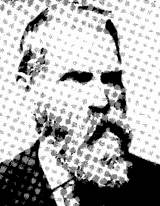
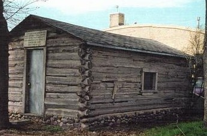

Preston Idaho

Weather Summary
Currently 38°F: Sunny
Temperature 75 °F
Wind Chill: °F
Humidity: 23%
Wind Speed: 4.7mph
5 Day Forecast
First Settlers and Early History
Elisha R. Laurence
Located on the flat, at the junction of Highways 91 and 36 is the county seat of Franklin County: Preston, Idaho. Prior to 1881, the flat was known as “Worm Creek” [pronounced “crick”]. Those that settled this area were predominantly Mormon and their leadership came from the LDS Church President in Salt Lake City, Utah. The name Preston was chosen for the area in the following manner as recorded by Baltzer Peterson:
Homesteaders were especially moving closer from the southeast and east due to the filling up of available quarter section homesteads along Worm Creek. Other early settlers in the area were: Alfred Alder, David Boyce, Thomas Bennett, William Bennett, William Bell, Hans M Lund, Benjamin Lamont, Anna Lundgren, William D. Millar, James Miller, Christen Mortensen, Claus Clausen, James Chadwick, Ephraim Ellsworth, Joseph Poster, George Poster, William Gibbons, Joseph Golightly, Willard Green, Anders Mortensen, J. O. Paton, Hyrum Nielsen, Joseph Nielsen, Hans Nisson, Hop Pender, Shem Purnell, Ernest Purnell, Ole Petersburg, Andrew Garrison, James R. Hebdon, G. Halverson, J. Harris, Martin Higley, Amelious Hansen, Elum Hollingsworth, Eil Petterborg, Joseph S. Sharp, George Shaffer, Allen Tatum, Robert Wayman, Charles West, Alfred Willhelm, John Winn and James Winn.
Education
Before the construction of the Worm Creek School, homes or private facilities of the people had were used to educate their children. The first community school was conducted in 1877 in Robert M. Hull’s log granary. Verena Foster, a girl of sixteen, was the first teacher. As with all early schools, her subjects were the three R’s and spelling. Books had to be shared and pencil and slate were used to record the new learning. The new log school building was ready in 1879 with Mary Heller as the first teacher.
Map of Preston Idaho

Contact Information
345 S 5th Rexburg, ID 83440

(597) 863-8455
Address: 2575 W 5700 S
Wellsville, Ut 84339

rainbowweather site.com